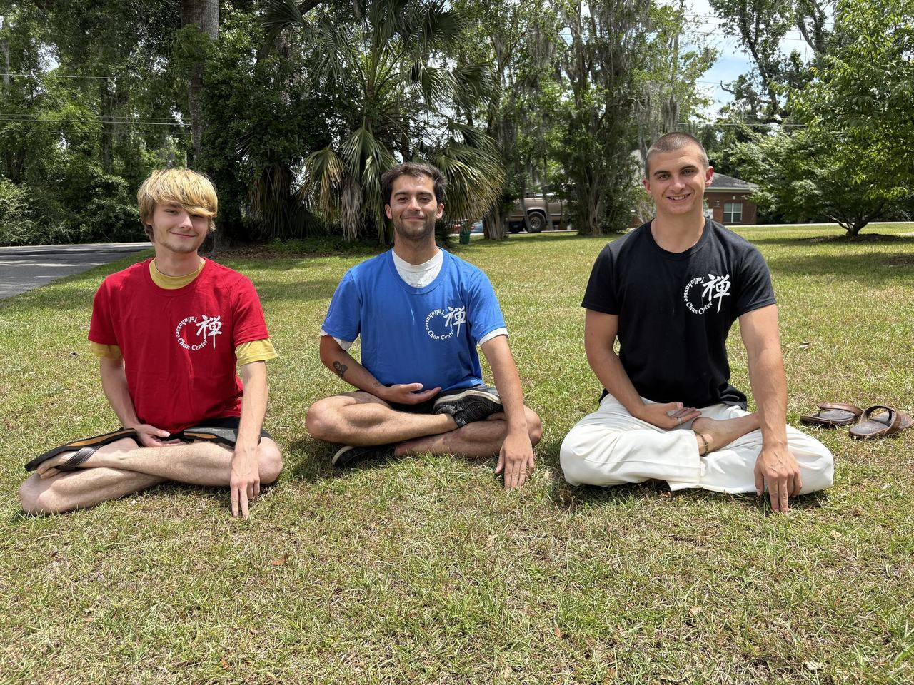

— Aaron Stryker, Executive Director
Dharma Gates is a grassroots nonprofit dedicated to opening pathways into formal meditation practice for young adults. We connect young practitioners to a variety of Buddhist teachers and practice centers, working to eliminate conceptual, logistical, and financial barriers to practice. We foster connections through which practitioners can cultivate compassion, resilience, and clarity to meet the unique challenges of our times.

Young adults (18–35) who want to know who we are, what a retreat is like, and how to get to one. → Retreats, FAQ
Checking what's coming up, staying connected between retreats, considering deeper training. → Ongoing practice, Advising
This page gets more traffic than you'd expect — people want to know who's behind the work. Photos and bios come across from the current Team page.
Our multi-day retreat offerings are growing. We're looking for retreat managers and head cooks to support multi-day meditation retreats across the United States, on a by-retreat basis — and volunteers who want to help hold the container.
Consolidates the current Work With Us, Volunteer, and Volunteer With Us pages (the latter two are empty today). The expired Program Coordinator posting redirects here.
We fully cover all expenses related to the retreat, including meals, housing, rental costs, and any teacher fees. Any donation — no matter how small — helps us continue to offer these retreats to future participants. Depending on one's life situation, this donation could be $3 or $3,000.
Full dana policy → consolidate Dana-Based + Suggested Donations + Retreat Cost into one page; figures conflict ($550/7 days vs $600/6 days)
Dharma Gates is committed to safety, integrity, and respect for your autonomy: non-harm, compassionate response, respect for the Dharma, strong governance, multidimensional safety, and ongoing reflection. Raising a concern is an expression of compassion and right action.
Our goal is to make sure deep meditation practice is accessible to any young person who is called towards it. We welcome people of all cultural, ethnic, and religious backgrounds, and encourage you to reach out for any accommodations that would be beneficial for you.
Policy language is quoted from the live pages and must be carried over word-for-word — content owner: Aaron. Two PDFs (Code of Conduct, Teacher/Facilitator Addendum) currently live on Squarespace file storage and need re-hosting.
Dharma Gates celebrates and cherishes the relationships we have with those who support our work, both individual donors and grant-making organizations.
funder logos + permission to display